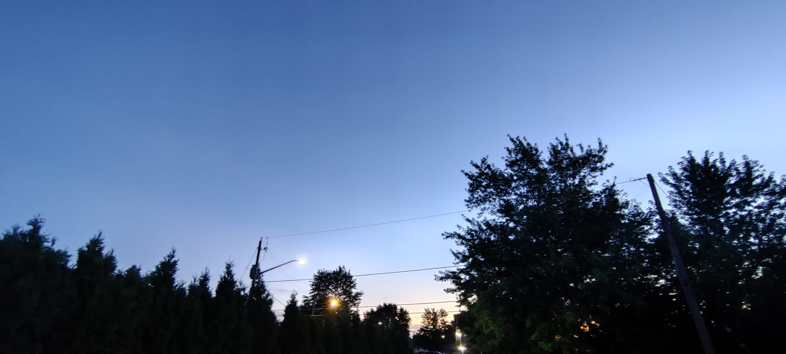
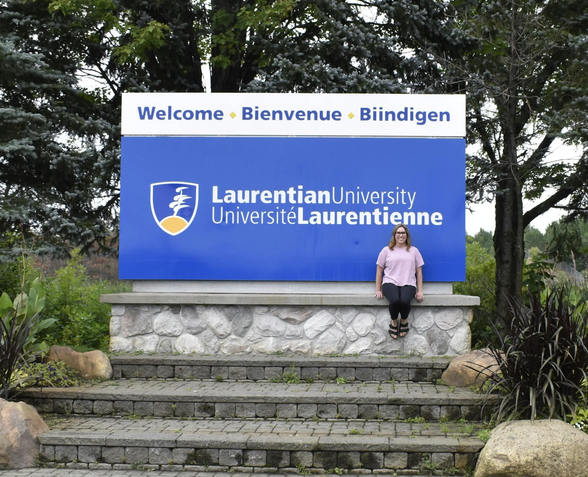
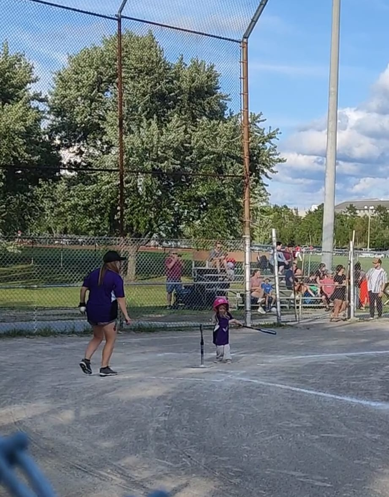
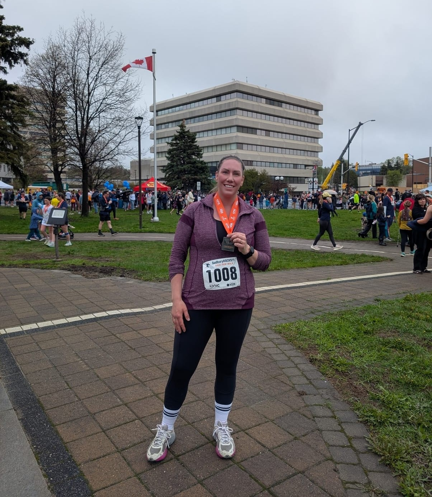

Deliver more, spend better
I do not believe a city should be run like a for-profit organization, but it should be responsible with the taxes it collects. The goal should be to improve services to its citizens while keeping tax increases below inflation.
I believe we can improve services and experiences to make this a city you are proud to live in, without placing an extra burden on taxpayers.
This site in only an introduction. If you would like to know more about my platform or positions, reach out via the links.
Where I stand
Priorities built around delivering services to citizens.
Housing first
Everyone deserves a safe place to call home. I am committed to reinforcing the city’s Housing First policy, ensuring individuals are placed in stable housing in a timely manner and backed by the wraparound social services they need to thrive. We can look to examples like Helsinki to transition from temporary shelters to permanent housing units, and Vienna’s renowned municipal framework to expand our supply of affordable, social housing.
Rinks & fields
I would like to continue the Ward 12 councillor tradition of improving our parks. The outdoor rinks in the city should be repaired, maintained and open for our kids to play. Some of our baseball fields need drainage improvements or to be regraded. Any improvements to free leisure and parks activities should be on the table to keep our citizens and children active and happy.
Public trust
I am committed to being a force against misinformation by keeping you accurately informed about our city initiatives and debunking false narratives before they spread. I would like to put a focus on doing a better job of getting the messaging out to citizens about what is going on in their city.
Garbage system
Waste reductions initiatives are important. However, to provide relief for those with confirmed rat infestations, I'm proposing two measures to help. First, waive tipping fees under 80lbs (two "lifts") for those addresses. Secondly, I would like to introduce a system to provide additional bag tags every month to those with rodent issues to avoid a backlog of garbage for residents without a suitable car to go to the landfill.
Four years became a lifetime.
My name is Linnet, I'm a Ward 12 resident and a proud mom of six amazing children; four biological and two stepchildren. Our oldest is 12, and our youngest will turn two this December. When I was 18 years old, I moved to Sudbury to attend Laurentian University. I chose Laurentian because I had already fallen in love with this city. Its incredible natural beauty and welcoming small-town feel, despite being a larger city, reminded me so much of where I grew up in Washago.
This fall marks 18 years since I made Sudbury my home. I've now lived half of my life here, and today I'm raising my own children in the same community that gave me so much.
If someone had told me five years ago that I would one day run for City Council, I probably would have laughed. I never would have imagined it. But today, I feel a deep sense of responsibility to step forward and do everything I can to help make Sudbury the incredible place it was when I chose to build my life here.
I'm running because I want my children, and every family, to experience this city the way I did when I first arrived: as a place full of opportunity, community, and pride. I believe in Sudbury, and I'm ready to work hard to help build a future we can all be proud of.
— Linnet
Life beyond the campaign
Grounded by family and inspired by our community.




This campaign runs on neighbours.
Door knocks, discussions and ideas. Here's where you fit in.
Give your input
No one person has all the answers. No one person has experienced every issue. Tell me yours.
Submit an ideaSpread the word
Request business cards to hand out or sign up to canvass and give them to your neighbours.
Request CardsRequest a call or meeting
Invite Linnet to your street, your organization, or your gathering. Or request a phone call.
Request a visitMedia
Links related to my campaign or platform
Support me for Ward 12Linnet Rimmer, Facebook
'A beacon of hope': 38-unit Peace Tower housing complex welcomes first tenantsTyler Clarke, Sudbury.com
A Look Into Finland’s Housing First InitiativeLilly Dietz, Pulitzer Center
Imagine a Renters’ Utopia. It Might Look Like Vienna.Francesca Mari, New York Times (Gift Article)
The remarkable stability of social housing in Vienna and Helsinki: a multi-dimensional analysisJustin Kadi & Johanna Lilius, doi.org